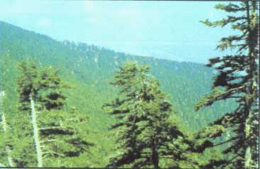
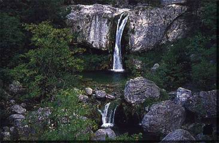
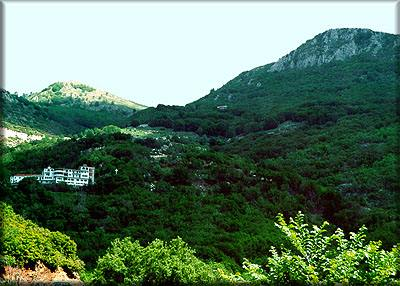

| Στο νησί της Κεφαλονιάς, στο Ιόνιο πέλαγος, κοντά στο Αργοστόλι και τη Σάμη βρίσκεται ο μικρότερος από τους Εθνικούς Δρυμούς της Ελλάδας, ο Εθνικός Δρυμός Αίνου. Σκοπός της ίδρυσής του ήταν η διαφύλαξη, από υβριδισμούς, του κατ' εξοχήν ενδημικού είδους ελάτης (Abies Cephalonica), που καλύπτει επιφάνεια 1.973 εκτάρια. Μέσα στο ελατοδάσος εμφανίζονται διάφορα πλατύφυλλα είδη και θάμνοι όπως γκορτσιές (Pirus amygdaliformis ), κραίταγοι (Craetagus,sp ), κλπ. Υπέροχοι θαμνώνες, που καλύπτουν συνολική επιφάνεια 646 εκταρίων αναπτύσσονται κατά κύριο λόγο στο βουνό ''Ρούδι'', που αποτελεί ξεχωριστό κομμάτι του πυρήνα του Δρυμού, στα βορειοδυτικά του κυρίως όγκου, του όρους ''Αίνος''. Στις ψηλότερες βραχώδεις αλπικές περιοχές κυριαρχούν τα ακανθώδη φρύγανα Astragalus cephalonicus και Astragalus augustifolius. Σημαντική είναι και η εξάπλωση του φρύγανου Phlomis fruticosa. |  |
|---|---|
|  | Η πανίδα του Εθνικού Δρυμού, αν και μάλλον φτωχή σε ποικιλία ειδών, είναι σημαντική για το νησί. Περιλαμβάνει λίγα θηλαστικά, όπως την αλεπού (Vupes vupes), το κουνάβι (Martes foina), το λαγό (Lepus europaus) κ.λ.π., καθώς και ένα αριθμό ειδών πτηνοπανίδας όπως την πετροπέρδικα (Alectoris graeca), το φιδαετό (Circaetus gallicus) και διάφορα διαβατικά. Πρόσφατα εντοπίσθηκε η Μαυροτσικλιτάρα (Drycopus martius), ένα είδος δρυοκολάπτη που δεν απαντάται σε άλλο νησί της Μεσογείου. Στο Δρυμό βρίσκει καταφύγιο πληθυσμός αλόγων του είδους Eguus cabalus, που ζουν στην ευρύτερη περιοχή σε ημιάγρια κατάσταση. Εντυπωσιακά ορεινά τοπία δίπλα στη θάλασσα, με σπάνιο χλωριδικό πλούτο, προσδίδουν μια ξεχωριστή αξία στο Δρυμό. |
|
Μέσα στο Δρυμό δεν υπάρχουν ξενοδοχεία ή άλλα καταλύματα. Η προσέγγιση είναι εύκολη μέσω ασφαλτοδρόμου που συνδέει τη Σάμη με το Αργοστόλι.
(Περισσότερες πληροφορίες: Δ/νση Δασών Κεφαλλονιάς. Τηλ. 0671 - 22993). |
 |